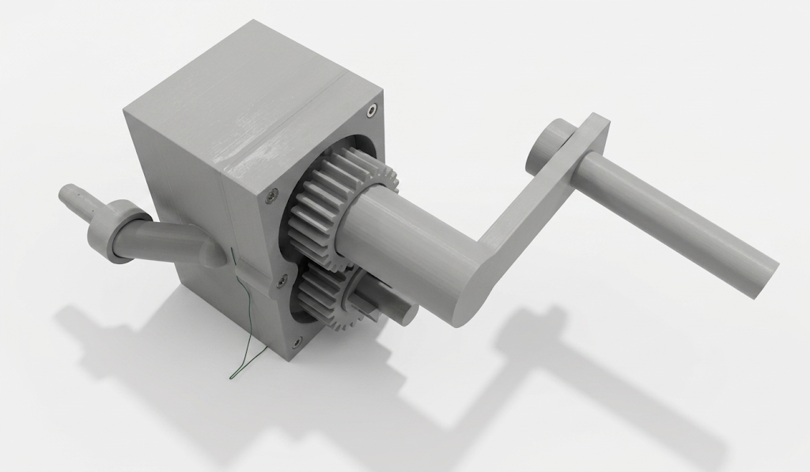
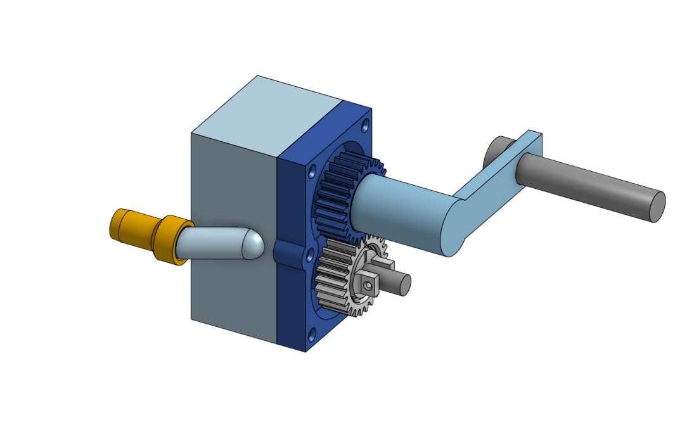
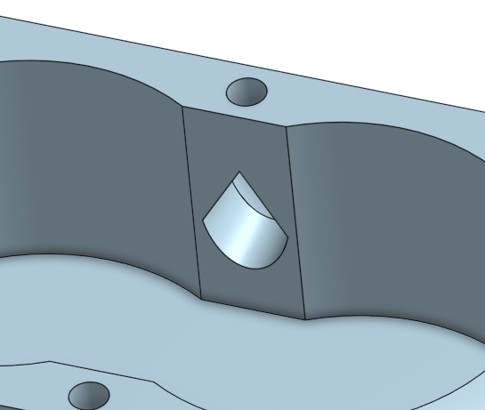
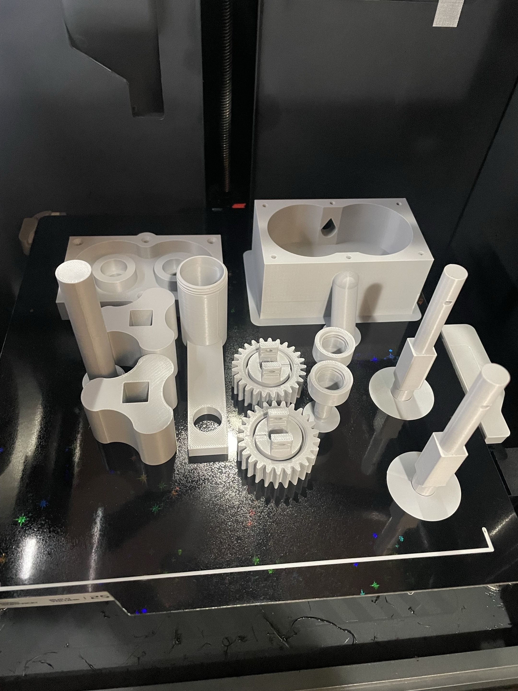
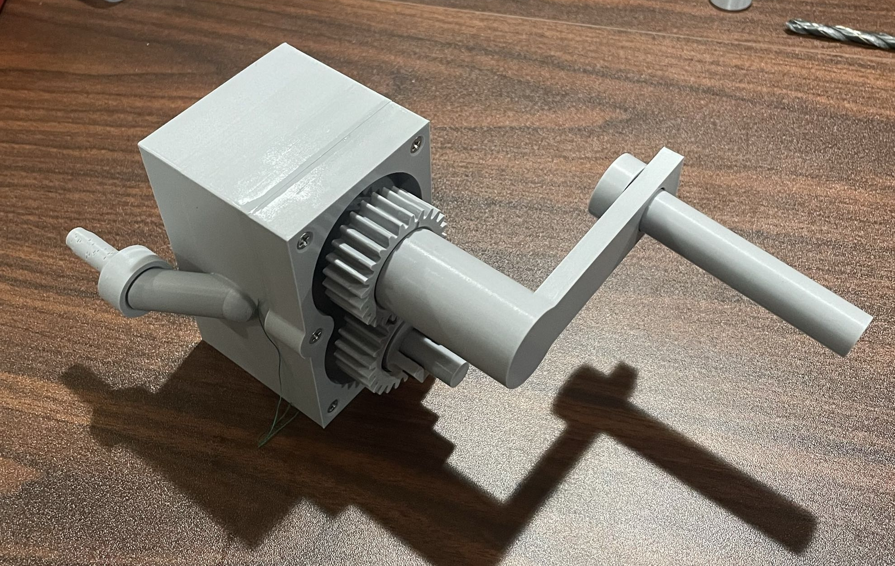

FDM Optimized Lobe Pump
Overview
The objective of this project was to utilize Design for Additive Manufacturing (DFAM) principles to redesign a traditional lobe pump for Material Extrusion (MEX) production. The primary goal was to produce a leak-proof, high-efficiency pump housing, internal lobes, and timing gears that minimized assembly requirements and eliminated internal support structures. The final physical prototype successfully pumped water at an average mass flow rate of 112.57 ml/s.
Key Design Highlights
- Implemented self-supporting Gothic arch profiles for the fluid inlet and outlet ports to eliminate the need for internal support material.
- Consolidated the inlet/outlet ports and lobe enclosure into a single housing to reduce potential leak paths.
- Applied a dual-infill strategy: 15% Gyroid infill for the main housing for general strength and to reduce weight, and 100% infill for drive shafts to maximize torsional strength from the increased layer adhesion.
- Maintained a tight 0.1 mm radial clearance between the lobes and housing, utilizing ironing and strategic use of Smooth PEI build plates to ensure smooth, leak-free mechanical operation.
- Ensured fluid integrity by using 4 wall loops to prevent weeping, supplemented with silicone grease and a silk thread gasket for maximum sealing under pressure.
Technical Specifications
| Machine Used | Bambu Lab P1S |
|---|---|
| Material | PLA (Polylactic Acid) |
| Volumetric Flow Rate | 112.57 ml/s (0.11257 kg/s) |
| Total Print Time | ~10 hours 19 minutes |
| Total Mass | 199.56 g |
| Layer Height & Nozzle | 0.20 mm layer height with a 0.4 mm Stainless Steel nozzle |
| Infill Settings | 15% Gyroid (Body), 100% (Shafts) |
Gallery



